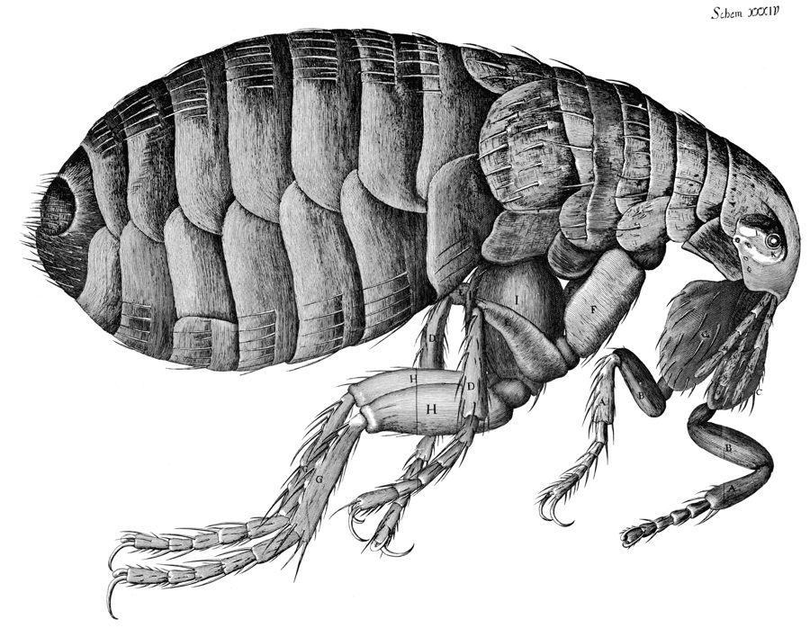
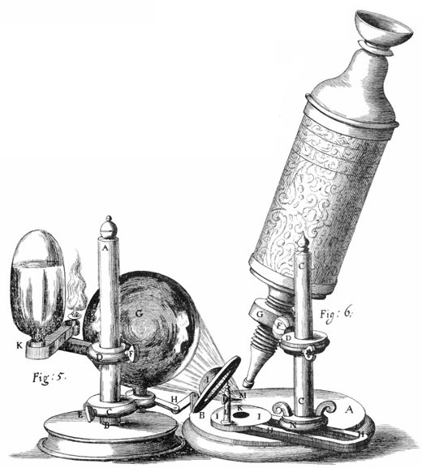
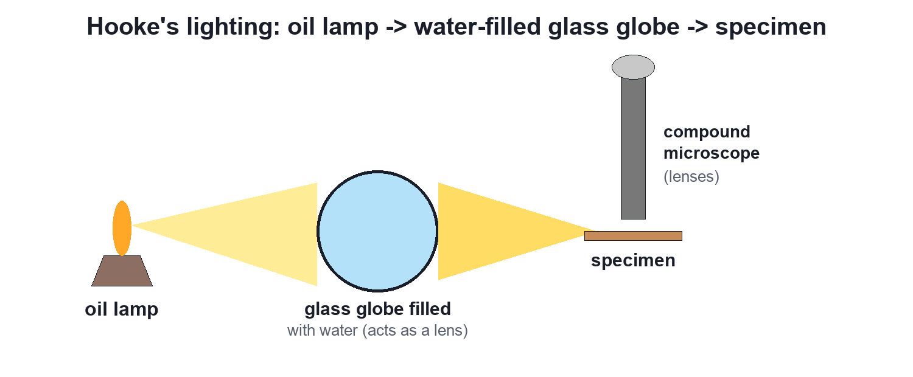
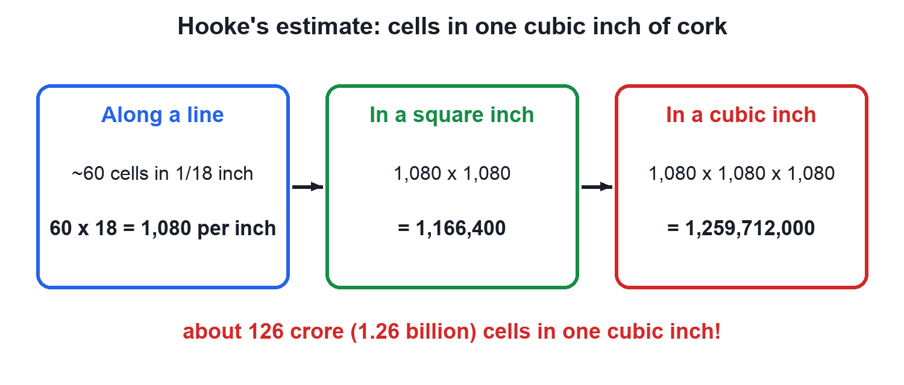

Robert Hooke and the Discovery of Cells
Video not playing? Watch on Instagram · YouTube
The man who named the cell left no surviving portrait. Meet Robert Hooke, his book Micrographia, his lamp-lit microscope and his count of cork cells.
Download the short notesPDF, 1.3 MB · solved examples, practice set and answer key Up next in this chapter
 Unicellular and Multicellular OrganismsAn amoeba is one cell; you are about 37 trillion. In one, a single cell does everything; in the other, cells share the work.Biology
Unicellular and Multicellular OrganismsAn amoeba is one cell; you are about 37 trillion. In one, a single cell does everything; in the other, cells share the work.Biology
Key points
- 1665: Robert Hooke published Micrographia and named the boxes in cork cells (Latin cella, a small room).
- He designed his compound microscope and lit specimens with an oil lamp and a water-filled glass globe.
- Cork cells are dead: he saw only the cell walls.
- His estimate: about 1,259,712,000 cells in one cubic inch of cork.
A famous scientist with no face
Robert Hooke (1635–1703) gave biology the word cell, yet no authentic portrait of him survives; pictures online are modern reconstructions. What survives is his 1665 book Micrographia, with huge engravings of what he saw through his microscope.

Lighting a microscope in 1665

There were no electric bulbs, so Hooke placed a glass globe filled with water in front of an oil lamp. The globe acted like a lens and focused the light onto the specimen.

The cork and the word 'cell'

In a very thin slice of cork Hooke saw tiny boxes arranged like a honeycomb and called them cells. Cork cells are dead, so he saw only empty cell walls, no nucleus or cytoplasm.
Hooke's count
He counted about 60 cells in 1/18 of an inch, so 1,080 per inch.
1,080 × 1,080 × 1,080 = 1,259,712,000 cells per cubic inch

Where Hooke fits in the story

Fun fact: this is the same Hooke as Hooke's law of springs, so one scientist matters in both physics and biology.
Quick quiz
4 questions. Choose an answer for each, then submit to see your score and the explanations.
More from The Fundamental Unit of Life
 Cell TheoryYour body has about 37 trillion cells. Three scientists showed that every living thing is built from cells, and every cell comes from another cell.Biology
Cell TheoryYour body has about 37 trillion cells. Three scientists showed that every living thing is built from cells, and every cell comes from another cell.Biology Discovery of the CellIn 1665 a thin slice of cork showed tiny boxes Robert Hooke called cells. Then came living cells (1674) and the nucleus (1831).Biology
Discovery of the CellIn 1665 a thin slice of cork showed tiny boxes Robert Hooke called cells. Then came living cells (1674) and the nucleus (1831).Biology